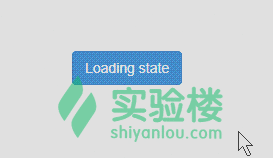
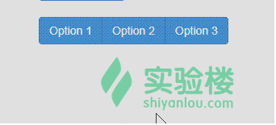
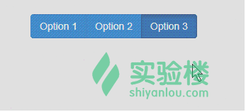

本次实验我们来继续改进之前做的按钮，让它变得更加智能。
按钮可以完成很多工作。控制按钮状态或创建按钮组可以产生类似工具条之类的复杂组件。
通过添加 data-loading-text="正在加载..."可以使按钮呈现加载状态。
<button type="button" id="fat-btn" data-loading-text="正在加载..." class="btn btn-primary">
Loading state
</button>
不过如果想启用加载的状态，还需要在点击按钮的时候进行手动启动。
<script type="text/javascript">
$('#fat-btn').click(function () {
var btn = $(this)
btn.button('loading')
setTimeout(function () {
btn.button('reset')
}, 3000)
})
</script>
上面的 JavaScript 代码，首先是设置让按钮处于加载状态，然后通过 SetTimeout 定时三秒中定义事件，让按钮回到初始化状态。
然后看一下点击按钮之后的效果

通过添加 data-toggle="button"可以让按钮能够切换状态。
<button type="button" class="btn btn-primary" data-toggle="button">Single toggle</button>
感觉按钮的颜色还是有些许的变化的。
通过向按钮组添加 data-toggle="buttons"可以使按钮组具有类似选择框的选择/取消功能。
<div class="btn-group" data-toggle="buttons">
<label class="btn btn-primary">
<input type="checkbox"> Option 1
</label>
<label class="btn btn-primary">
<input type="checkbox"> Option 2
</label>
<label class="btn btn-primary">
<input type="checkbox"> Option 3
</label>
</div>

通过向按钮组添加 data-toggle="buttons"可以让按钮组具有单选框的功能。
<div class="btn-group" data-toggle="buttons">
<label class="btn btn-primary">
<input type="radio" name="options" id="option1"> Option 1
</label>
<label class="btn btn-primary">
<input type="radio" name="options" id="option2"> Option 2
</label>
<label class="btn btn-primary">
<input type="radio" name="options" id="option3"> Option 3
</label>
</div>

这个可只有单选的效果吧。
<button class="btn btn-primary" id="btn" data-toggle="button">单独开关</button>
<a href="javascript:void(0)" class="btn btn-success" onClick="_switch()">切换</a>
上面我们只是通过 data 属性来切换按钮的状态，现在我们来用 JavaScript 来实现。
<script type="text/javascript">
function Switch()
{
$("#btn").button('toggle');
}
</script>
按钮插件完整支持 data 属性。通过下面的案例可以看到各种使用方式。
$().button('toggle')
切换按钮状态。赋予按钮被激活时的状态和外观。
自动切换
可以使用 data-toggle 属性让按钮具有自动切换状态的能力。
<button type="button" class="btn" data-toggle="button">...</button>
上面已经有实例了，在此就简单的举个例子。
$().button('loading')
设置按钮状态为 loading - 即将按钮置为禁用状态并将文字内容切换为 loading。通过使用 data-loading-text 可以在按钮元素上定义 loading 文本。
<button type="button" class="btn" data-loading-text="loading stuff...">...</button>
这个效果上面也有了。
跨浏览器兼容性
Firefox 会在多个页面加载之间保持按钮的禁用状态。可以通过添加 autocomplete="off"来解决提到的问题。
$().button('reset')
重置按钮状态 - 并将按钮上的文本还原为原始值。
$().button(string)
重置按钮状态 - 并将按钮上的文本重置为传入的值。
<button type="button" class="btn" data-complete-text="finished!" >...</button>
<script>
$('.btn').button('complete')
</script>